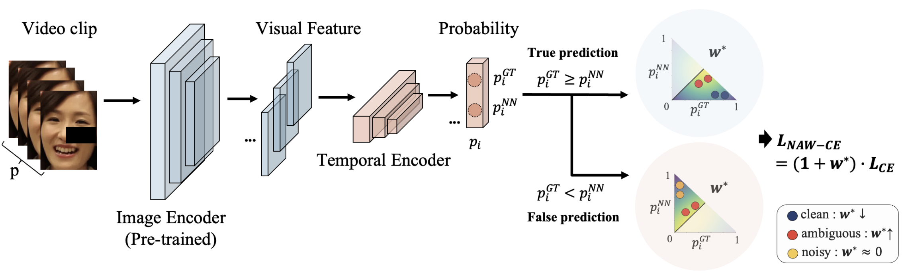
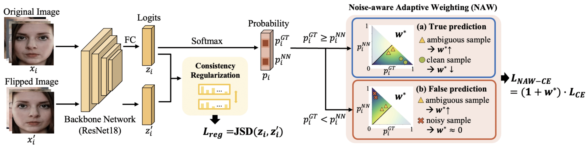
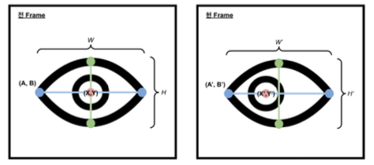

AI, 속마음을 읽다
Chosun (조선일보) · Jul 2023

Ph.D. Student in AI
Yonsei University, Department of Artificial Intelligence
M.S. in AI Robotics, KIST School (UST)
I am a Ph.D. student at the Graduate School of Artificial Intelligence, Yonsei University, advised by Prof. Hae-Gon Jeon. My research interests include Trajectory Prediction, Crowd Generation, and World Models. My goal is to develop human-centric AI solutions that address complex societal challenges and create meaningful real-world impact.



Summer Annual Conference of IEIE, 2024
Navigating Label Ambiguity for Facial Expression Recognition in the Wild (AAAI 2025)
Video-based Noise-aware Adaptive Weighting for FER (CVPR Workshop 2025)
PyQt-based app for facial expression recognition from images, videos, or real-time webcam. Supports multi-face detection and softmax probability visualization.
Real-time facial expression recognition using softmax-based classification. Includes face detection, preprocessing, and visualization.
Extension of expression recognition to continuous affect modeling via valence–arousal space. Real-time video interface and visual affect mapping.
Real-time eye blink detection for behavioral analysis and human state monitoring. Optimized for embedded systems and anxiety estimation pipelines.
Lightweight face detector for real-time webcam input. Based on SSD and RetinaFace, tuned for single-person detection scenarios.
Ph.D. in Engineering, Artificial Intelligence
Advisor: Prof. Hae-Gon Jeon
Master of Engineering, AI Robotics
Korea Institute of Science and Technology (KIST) School
Advisor: Prof. Gi Pyo Nam
Bachelor's degree, Big Data Analytics
8th ABAW Competition @ CVPR Workshop
KIST Convergence Conference, Korea Institute of Science and Technology (KIST)
AI-Robotics Research Division, Korea Institute of Science and Technology (KIST)
Engineering Research Park (공학원), Yonsei University, Seoul